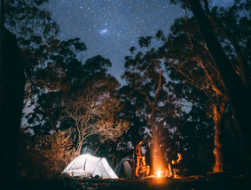
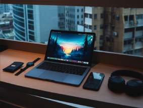
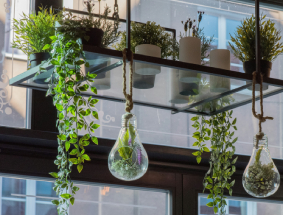
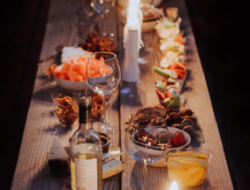
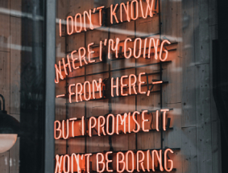
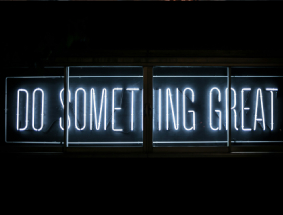
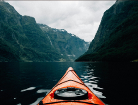
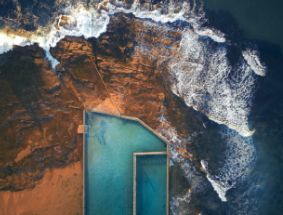

|  |  | |
|  |  |  |
|  |  |  |
Hello and welcome to my murky depths!
I have a dedication to all things ICT and many passions to go along with
it. Allow me to tell you a bit about them!
When I am not behind a screen you can find me indulging in one of my many hobbies. I like to camp whenever I get the chance, and sometimes you'll catch me doing a bit of gold panning in riverbeds. I am an enthusiastic amature photographer, though I rarely show my work to anyone. I grown my own herbs and like to cook delicious food, and I love sharing food with my friends and family. Gardening is a special hobby of mine, although my garden is all indoors as I don't have an outdoor space. I like to bring nature indoors and have over 100 houseplants of varying species. And lastly, I enjoy water sports. Throughout summer I like to SUP, kayak and swim in ocean pools. I'm currently working my way through a wild swimming book.
Learn more about my hobbies here: